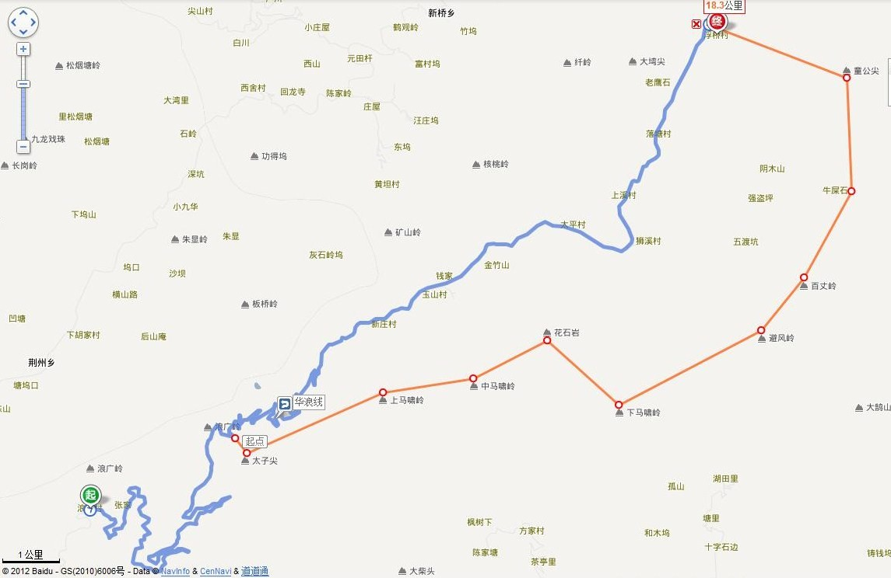
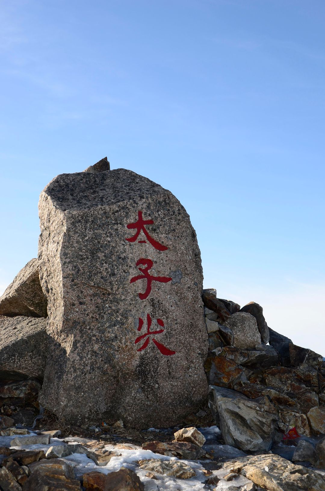
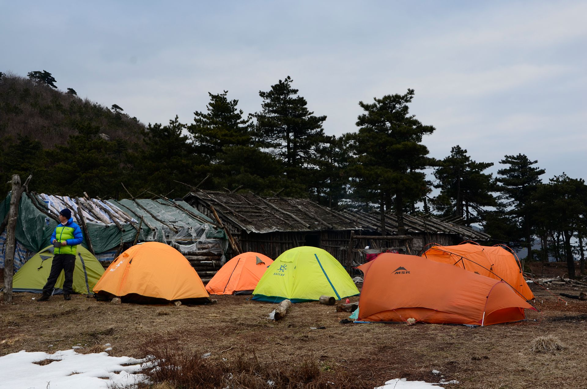
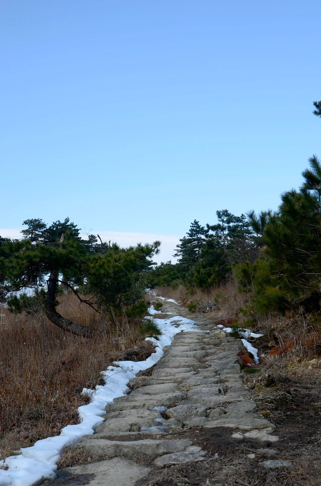

发信人: Julylovingu (小七), 信区: outdoor
标 题: <第一弹>三尖穿越 召集令
发信站: 饮水思源 (2014年03月01日00:00:51 星期六)
正值春回大地之际，想必各位已经投入了充实的学习生活。趁课业还没有那么繁忙，
小伙伴们快来参加我们的三尖穿越活动。登顶三尖，体验户外，感受自然。让我们白天里
挥汗山间，夜晚里围着篝火游戏起来，在星月天空下，在温暖的帐篷中进入梦乡。
1 地理位置：
三尖位于临安西部，南起清凉峰一带，北至浙西大峡谷一带。
 screen.width - 200){this.width = screen.width - 200}">
沿途经过，浪广（起点）-太子尖（海拔1558米）-中马啸（1449米）-花石冈（1485）-下
马啸（1152米）-百丈岭林场（宿营地1259）-百丈岭（1584）-大牛粪（1598米）-童公尖
（1558）-浮桥村（终点），全程42公里多。
screen.width - 200){this.width = screen.width - 200}">
 screen.width - 200){this.width = screen.width - 200}">
 screen.width - 200){this.width = screen.width - 200}">
 screen.width - 200){this.width = screen.width - 200}">
2 难度说明
太子尖-百丈岭-童公尖穿越路线：三尖穿越全路段沿途攀爬的地方不多，安全性好，但是
线路长强度比较大，下撤时坡度较陡，是一条不错的徒步穿越路线。
3 穿越时间：2014年3月8~9日
4 行程安排：
周五（3月7日）
7:00 坐车从庙门出发
24:00到达，扎营山脚下
周六（3月8日）
05: 00 起床，在老乡家吃早饭
06：30 早餐后从老乡家出发
07: 00 前往华浪线最高处开始登山
08：30 到达太子尖
12：00 到绝望坡前小溪沟吃饭，顺便欣赏美丽景色，呼吸清新气息
12: 30 吃完饭再次出发
16：30 到达百丈岭前扎营。
18：00 做饭
19：00 篝火点起来，娱乐
22：00 休息，为第二天的行程养精蓄锐
周日（3月9日）
07：00 拔营出发，继续三尖之漫漫长路
12：30 之前登顶童公尖简单补充能量，马上下山
14：30 至浮桥村到公路上车
15：30 乘车回上海。
21：30 到达上海
5 报名费用：
费用：总计：会员：270元/人 非会员：300元/人（多退少补）
明细：营地费用：10元/人
下山腐败：40元/人
装备费用：50元/人（帐篷20，背包15，防潮垫加睡袋10，气罐加炉头5.自己有装备可退个
人装备部分）
户外险：10元/人
车费：150元/人
向导费：10元/人
6 报名时间：3月2日 周日晚上7点前
7 【报名方式】：有意参加的小伙伴快去同去网报名吧。
网址在这里：http://tongqu.me/index.php/activity?id=2829
8 所需装备（不详尽）
1.登山背包、冲锋衣裤、帐篷、睡袋、防潮垫、抓绒衣、登山鞋、手套、垃圾袋、水壶水
袋…
2.工具：炉头、食具、多功能刀具、头灯手电、备用电池、指南针；
3.个人用品：长裤，长袖、帽子、速干袜、内衣、纸巾和湿纸巾；
5.药品：风油精、创可贴、止血绷带（可选）；
6.食品：1早，2中，1晚；水 1.5升－2升（小溪沟，百丈岭有水源补给）；
7.睡袋：-5度到0度左右睡袋。一个棉睡袋。
--
※ 来源:·饮水思源 bbs.sjtu.edu.cn·[FROM: 121.227.60.105]
|